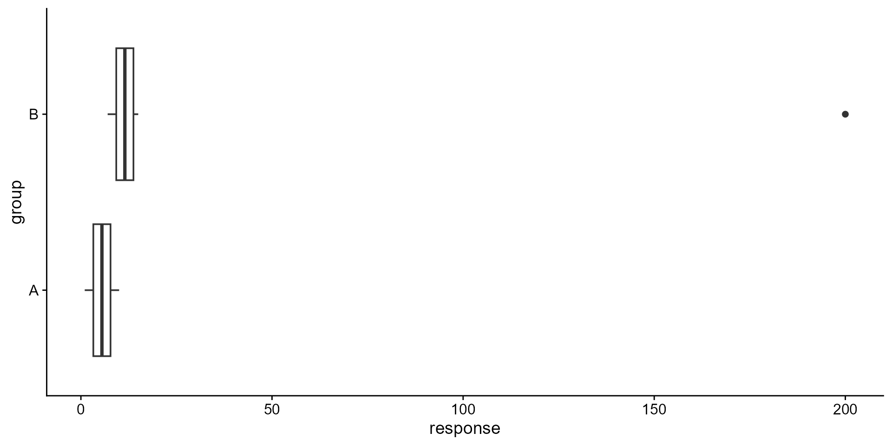
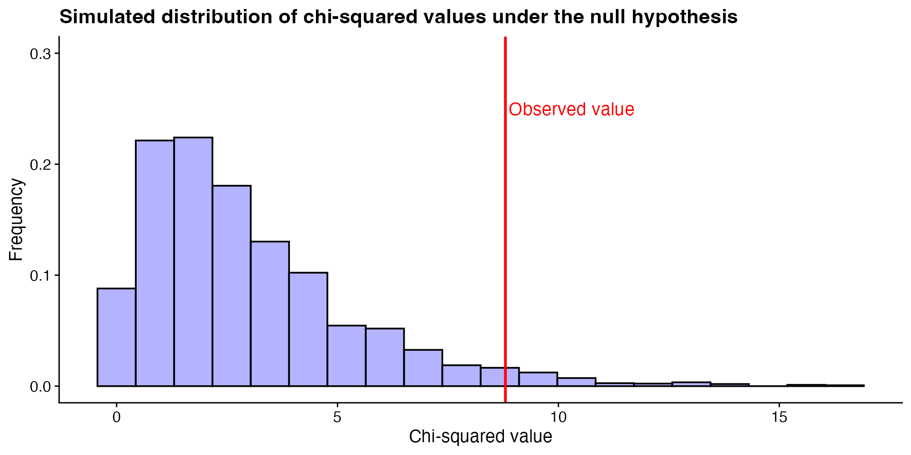

Code
| A | B |
|---|---|
| 1 | 7 |
| 2 | 8 |
| 3 | 9 |
| 4 | 10 |
| 5 | 11 |
| 6 | 12 |
| 7 | 13 |
| 8 | 14 |
| 9 | 15 |
| 10 | 16 |
ENVX1002 Statistics in Life and Environmental Sciences
The University of Sydney
Feb 2026
Depends on the assumption that the data is normally distributed with mean \(\mu\) and standard deviation \(\sigma\) ,e.g. \(t\)-test, ANOVA, linear regression.
Do not make any assumptions about the distribution of the data.
Uses other properties e.g. ranking of the data, e.g. Wilcoxon signed-rank test, Mann-Whitney U test, Kruskal-Wallis test.
For the Wilcoxon signed-rank test suppose we have the following data:
| sample: | 12 | 10 | 8 | 6 | 4 | 10 | 8 | 6 | 10 |
|---|
We arrange the data in ascending order (similar values are given the same colour for illustration):
| ordered: | 4 | 6 | 6 | 8 | 8 | 10 | 10 | 10 | 12 |
|---|
Then, we rank the data:
| ordered ranks: | 1 | 2 | 3 | 4 | 5 | 6 | 7 | 8 | 9 |
|---|
Finally, ranks that are tied are given the average rank:
| final rank: | 1 | 2.5 | 2.5 | 4.5 | 4.5 | 7 | 7 | 7 | 9 |
|---|
These ranks are then used to perform the test, instead of the original data.
Consider two sets of identical data that compares between a group A and B, where one contains an outlier.
Data:
Without the outlier, the data would have been normally distributed.
df <- data.frame(
group = rep(c("A", "B"), each = 10),
response = c(1, 2, 3, 4, 5, 6, 7, 8, 9, 10,
7, 8, 9, 10, 11, 12, 13, 14, 15, 16))
df_with_outlier <- data.frame(
group = rep(c("A", "B"), each = 10),
response = c(1, 2, 3, 4, 5, 6, 7, 8, 9, 10,
7, 8, 9, 10, 11, 12, 13, 14, 15, 200))
ggplot(df, aes(x = response, y = group)) +
geom_boxplot()The same data, but with a single outlier in group B:
If we perform \(t\)-tests on both data sets, we get the following results:
Welch Two Sample t-test
data: response by group
t = -4.4313, df = 18, p-value = 0.0003224
alternative hypothesis: true difference in means between group A and group B is not equal to 0
95 percent confidence interval:
-8.844662 -3.155338
sample estimates:
mean in group A mean in group B
5.5 11.5 Results indicate that there is a statistically significant difference between the two groups (t18 = -4.4, p < 0.05).
Welch Two Sample t-test
data: response by group
t = -1.2882, df = 9.0461, p-value = 0.2297
alternative hypothesis: true difference in means between group A and group B is not equal to 0
95 percent confidence interval:
-67.21615 18.41615
sample estimates:
mean in group A mean in group B
5.5 29.9 Results indicate that the two groups are not significantly different (t18 = -2.1, p = 0.23).
The real difference between the two groups is obscured by the outlier. Type II error (false negative)?
library(tidyverse)
library(gt)
df <- tibble(
parametric = c("One-sample t-test", "Two-sample t-test", "ANOVA", "Pearson's correlation"),
non_parametric = c("Wilcoxon signed-rank test", "Mann-Whitney U test", "Kruskal-Wallis test", "Spearman's rank correlation"))
gt(df) %>%
opt_table_font(font = "Crimson Pro", add = FALSE) %>%
cols_label(parametric = "Parametric tests", non_parametric = "Non-parametric counterpart") %>%
tab_options(
table.font.size = px(24),
column_labels.font.weight = "bold")| Parametric tests | Non-parametric counterpart |
|---|---|
| One-sample t-test | Wilcoxon signed-rank test |
| Two-sample t-test | Mann-Whitney U test |
| ANOVA | Kruskal-Wallis test |
| Pearson's correlation | Spearman's rank correlation |
All of the non-parametric techniques above convert the data into ranks before performing the test.
Note
We will focus on the Wilcoxon signed-rank test and the Mann-Whitney U test.
Altenrative to the one-sample \(t\)-test and the paired \(t\)-test.
The Wilcoxon signed-rank test is a non-parametric test used to compare two related samples, matched pairs, or repeated measures on a single sample.
Is an alternative to:
Basically, used in same situations as the one-sample or paired \(t\)-test, but when the data is not normally distributed but still symmetric.
If comparing two groups, the ranks are calculated as follows:
Note
See Slide 5 to recall how ranks are calculated, but we will show another example in the next slide.
We measured weight gain in chickens before and after a diet.
| chicken | weight | weight_after |
|---|---|---|
| 1 | 2.5 | 4.0 |
| 2 | 3.5 | 5.0 |
| 3 | 3.5 | 5.0 |
| 4 | 3.4 | 4.6 |
df %>%
mutate(D = weight_after - weight) %>%
mutate(Sign = ifelse(D > 0, "+", "-")) %>%
mutate(rank = rank(abs(D))) %>%
mutate("Signed rank" = ifelse(D > 0, rank, -rank)) %>%
gt() %>%
opt_table_font(font = "Crimson Pro", add = FALSE) %>%
tab_options(
table.font.size = px(24),
column_labels.font.weight = "bold")| chicken | weight | weight_after | D | Sign | rank | Signed rank |
|---|---|---|---|---|---|---|
| 1 | 2.5 | 4.0 | 1.5 | + | 3 | 3 |
| 2 | 3.5 | 5.0 | 1.5 | + | 3 | 3 |
| 3 | 3.5 | 5.0 | 1.5 | + | 3 | 3 |
| 4 | 3.4 | 4.6 | 1.2 | + | 1 | 1 |
Note
The order of the ranks is based on the absolute values of the differences; the signs are assigned afterward.
Is there a significant increase in weight gain after the diet?
\[H_0: \mu_{\text{before}} = \mu_{\text{after}}\] \[H_1: \mu_{\text{before}} < \mu_{\text{after}}\]
In words:
Alternatively, since the data is paired, we may also consider hypotheses based on the differences between the two groups:
\[H_0: \mu_D = 0\] \[H_1: \mu_D > 0\]
where \(D\) is the difference between the two groups.
With so few data points, we may want to use a formal test to check for normality.
Shapiro-Wilk normality test
data: df$weight_after - df$weight
W = 0.62978, p-value = 0.001241Results indicate that the data significantly deviates from normality (W = 0.63, p < 0.05). We will use the Wilcoxon signed-rank test.
Wilcoxon signed rank test with continuity correction
data: df$weight_after and df$weight
V = 10, p-value = 0.04449
alternative hypothesis: true location shift is greater than 0where V is the sum of the signed ranks.
The results indicate that there is a significant increase in weight gain after the diet (V = 10, p < 0.05).
Researchers investigated differences in beetle consumption between two size classes of eastern horned lizard (Phrynosoma douglassi brevirostre)
Focusing on just the smaller size class (for now) – it was hypothesised that this size class would eat a minimum of 100 beetles per day.
Does the average smaller size class lizard eat about 100 beetles per day?
\[H_0: \mu = 100\] \[H_1: \mu \neq 100\]
Is it normally distributed?
The Wilcoxon signed-rank test for one sample can be performed as follows:
Wilcoxon signed rank test with continuity correction
data: .
V = 92, p-value = 0.09755
alternative hypothesis: true location is not equal to 100Results indicate that the average number of beetles consumed by the smaller size class lizard is not significantly different from 100 (V = 92, p = 0.1).
Important
We are unable to make a conclusion about effect size from non-parametric tests as the information is lost when the data is transformed into ranks.
Alternative to the two-sample \(t\)-test.
Also called the Mann–Whitney–Wilcoxon (MWW/MWU), Wilcoxon rank-sum test (what R calls it), or Wilcoxon–Mann–Whitney test.
Researchers investigated differences in beetle consumption between two size classes of eastern horned lizard (Phrynosoma douglassi brevirostre)
We will now compare the number of beetles consumed by the larger and smaller size classes of lizards.
Are the number of beetles consumed by the larger and smaller size classes of lizards different?
Loosely speaking, because we are not assuming symmetry, the most appropriate summary statistic to use when comparing the two groups is the median.
\[H_0: median_{\text{larger}} = median_{\text{smaller}}\] \[H_1: median_{\text{larger}} \neq median_{\text{smaller}}\]
More accurately, we are testing for a difference in the distribution of the two groups.
p1 <- ggplot(beetle, aes(x = BEETLES)) +
geom_histogram(bins = 14, position = "dodge") +
facet_wrap(~SIZE, ncol = 1)
p2 <- ggplot(beetle, aes(x = SIZE, y = BEETLES)) +
geom_boxplot()
p3 <- ggplot(beetle, aes(sample = BEETLES)) +
stat_qq() +
stat_qq_line() +
facet_wrap(~SIZE, ncol = 1)
library(patchwork)
p1 + p2 + p3Data does not meet the normality assumption.
The same function wilcox.test() can be used to perform the Mann-Whitney U test.
Wilcoxon rank sum test with continuity correction
data: BEETLES by SIZE
W = 329, p-value = 0.07494
alternative hypothesis: true location shift is not equal to 0W is the sum of the ranks of the smaller group.The results indicate that the number of beetles consumed by the larger and smaller size classes of lizards is not significantly different (W = 329, p = 0.07).
Some data are not measured on a continuous scale, but rather as categories.
Consider the following questions:
A biologist claims that when sampling the Australian Botanical Gardens for butterflies, the ratio of the most dominant colours (red, blue, green, and yellow) is equal. How would you determine if the biologist’s claim is true?
A study was conducted on a population of deer to see if there is a relationship between their age group (young, adult, old) and their preferred type of vegetation (grass, leaves, bark). Is age group of the deer independent of their vegetation preference?
How would you measure these variables, and what sort of summary statistics can you use?
We can only count the number of times a particular category occurs, or the proportion of the total that each category represents.
curve(dchisq(x, df = 1), from = 0, to = 9, xlim = c(-10, 10), col = "blue", lwd = 2, ylab = "Density", xlab = "Value", main = "Chi-squared vs. normal")
curve(dnorm(x, mean = 0, sd = 1), from = -9, to = 9, col = "red", lwd = 2, add = TRUE)
abline(v = 0, col = "black", lty = 2)
legend("topright", legend = c("Chi-squared with 1 df", "Normal"), col = c("blue", "red"), lwd = 2)How is the chi-squared distribution used in hypothesis testing?
A biologist claims that when sampling the Australian Botanical Gardens for butterflies, the ratio of the most dominant colours (red, blue, green, and yellow) is equal. How would you determine if the biologist’s claim is true?
Suppose we have the following data on the colours of butterflies after randomly sampling 200 of them:
Therefore:
The test statistic for the chi-squared test is calculated as:
\[ \chi^2 = \sum \frac{(O - E)^2}{E} \]
where \(O\) is the observed frequency and \(E\) is the expected frequency.
Under the null hypothesis, the observed frequencies are equal to the expected frequencies i.e. the biologist’s claim is true.
Suppose we repeat the sampling process many times, assuming the null hypothesis is true, each time calculating the test statistic. What would the distribution of test statistics look like?
# simulate sampling of 200 butterflies 1000 times under the null hypothesis and plot the distribution of chi-squared values
set.seed(123)
cols <- c("red", "blue", "green", "yellow")
B <- 3000
test_statistic <- vector(mode = "numeric", length = B)
for (i in 1:B) {
sim <- sample(
x = cols, size = 200, replace = TRUE,
prob = c(0.25, 0.25, 0.25, 0.25)
)
sim_y <- table(sim)
test_statistic[i] <- sum((sim_y - 50)^2 / 50)
}
p1 <-
ggplot(data.frame(test_statistic), aes(x = test_statistic)) +
geom_histogram(aes(y = ..density..), bins = 20, fill = "blue", colour = "black", alpha = 0.3) +
ylim(0, 0.3) +
labs(title = "Simulated distribution of chi-squared values under the null hypothesis") +
xlab("Chi-squared value") +
ylab("Frequency")
p1
Comparing our test statistic to the simulated distribution, we can see that the 0.03% of the simulated values are greater than our test statistic. What does this tell us?
A chi-squared distribution allows us to perform the same hypothesis test without the need for simulation.
ggplot(data.frame(test_statistic), aes(x = test_statistic)) +
geom_histogram(aes(y = ..density..), bins = 20, fill = "blue", colour = "black", alpha = 0.3) +
ylim(0, 0.3) +
stat_function(fun = dchisq, args = list(df = 3), color = "red", size = 1) +
labs(title = "Simulated distribution of chi-squared values under the null hypothesis") +
xlab("Chi-squared value") +
ylab("Frequency")
The results of the simulation suggest that the observed frequencies of butterfly colours are significantly different from the expected frequencies, and we can reject the biologist’s claim.
par(mfrow = c(2, 2))
curve(dchisq(x, df = 2), from = 0, to = qchisq(0.995, df = 2), col = "blue", lwd = 2, ylab = "Density", xlab = "Value", main = "Chi-squared with 2 df")
curve(dchisq(x, df = 10), from = 0, to = qchisq(0.995, df = 10), col = "blue", lwd = 2, ylab = "Density", xlab = "Value", main = "Chi-squared with 10 df")
curve(dchisq(x, df = 50), from = 0, to = qchisq(0.995, df = 50), col = "blue", lwd = 2, ylab = "Density", xlab = "Value", main = "Chi-squared with 50 df")
curve(dchisq(x, df = 100), from = 0, to = qchisq(0.995, df = 100), col = "blue", lwd = 2, ylab = "Density", xlab = "Value", main = "Chi-squared with 100 df")The sample size assumption ensures that the chi-squared distribution is a good approximation of the normal distribution.
A biologist claims that when sampling the Australian Botanical Gardens for butterflies, the ratio of the most dominant colours (red, blue, green, and yellow) is equal. How would you determine if the biologist’s claim is true?
\[ H_0: p_1 = p_2 = p_3 = p_4 = 0.25 \] \[ H_1: \text{at least one } p_i \neq 0.25 \]
Assumptions
By performing the chi-squared test, we can check the assumptions of the test by looking at the calculated frequences in the output:
Test statistic
The results of the chi-squared test suggest that the observed frequencies of butterfly colours are significantly different from the expected frequencies (\(\chi^2 = 8.8\), \(df = 3\), \(p = 0.032\)). We can reject the null hypothesis and conclude that the biologist’s claim is not true.
Note
If you’re interested, compare this result to the simulation we performed earlier.
A study was conducted on a population of deer to see if there is a relationship between their age group (young, adult, old) and their preferred type of vegetation (grass, leaves, bark). Is age group of the deer independent of their vegetation preference?
\[ H_0: \text{Age group is independent of vegetation preference} \]
No relationship between the two variables
\[ H_1: \text{Age group is not independent of vegetation preference} \]
There is a relationship between the two variables
Suppose we have the following data on the age group and vegetation preference of 100 deer:
grass leaves bark
young 20 30 10
adult 10 10 20
old 10 10 10Assumptions are met as we can see the contingency table in the previous slide.
Pearson's Chi-squared test
data: deer_data
X-squared = 13.542, df = 4, p-value = 0.008911We reject the null hypothesis since the p-value is less than 0.05.
The results of the chi-squared test suggest that the age group of the deer is not independent of their vegetation preference (\(\chi^2 = 12.4\), \(df = 4\), \(p < 0.001\)). We can reject the null hypothesis and conclude that there is a relationship between the age group of the deer and their vegetation preference.
Is age group independent of vegetation preference?
Is the distribution of vegetation preference the same if we compare young, adult, and old deer?
This presentation is based on the SOLES Quarto reveal.js template and is licensed under a Creative Commons Attribution 4.0 International License.